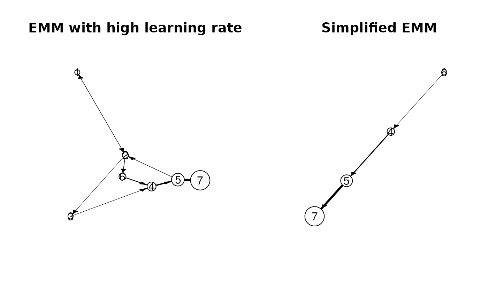

Simplifies an EMM and/or the clustering by removing all clusters/states and/or transitions which have a count of equal or smaller than a given threshold.
Usage
rare_transitions(x, count_threshold, ...)
rare_clusters(x, count_threshold, ...)
# S4 method for class 'EMM'
prune(
x,
count_threshold,
clusters = TRUE,
transitions = FALSE,
copy = TRUE,
compact = TRUE
)Arguments
- x
an object of class
"EMM"- count_threshold
all states/edges with a count of less or equal to the threshold are removed from the model.
- ...
further arguments (currently not used).
- clusters
logical; prune clusters?
- transitions
logical; prune transitions?
- copy
logical; make a copy of x before reclustering? Otherwise the function will change
x!- compact
logical; tries make the data structure used for the temporal model more compact after pruning.
Value
prune returns invisibly an object of class EMM.
If copy=FALSE then it returns a reference to the changes
object passed as x.
rare_clusters returns a vector of names of rare clusters.
rare_transitions returns a data.frame of rare transitions.
Examples
data("EMMTraffic")
## For the example we use a very high learning rate
emm_l <- EMM(threshold=0.2, measure="eJaccard", lambda = 1)
build(emm_l, EMMTraffic)
## show state counts and transition counts
cluster_counts(emm_l)
#> 1 2 3 4 5 6
#> 0.002441406 0.067382812 0.007812500 0.265625000 0.531250000 0.125000000
#> 7
#> 1.000000000
transition_matrix(emm_l, type="counts")
#> 1 2 3 4 5 6 7
#> 1 1.000000 1.004883 1.000000 1.000000 1.00000 1.000 1
#> 2 1.001953 1.000000 1.007812 1.000000 1.00000 1.125 1
#> 3 1.000000 1.000000 1.000000 1.015625 1.00000 1.000 1
#> 4 1.000000 1.000000 1.000000 1.000000 1.53125 1.000 1
#> 5 1.000000 1.062500 1.000000 1.000000 1.00000 1.000 2
#> 6 1.000000 1.000000 1.000000 1.250000 1.00000 1.000 1
#> 7 1.000000 1.000000 1.000000 1.000000 1.00000 1.000 1
## rare state/transitions
rare_clusters(emm_l, count_threshold=0.1)
#> [1] "1" "2" "3"
rare_transitions(emm_l, count_threshold=0.1)
#> from to
#> [1,] "2" "1"
#> [2,] "1" "2"
#> [3,] "5" "2"
#> [4,] "2" "3"
#> [5,] "3" "4"
## remove all states with a threshold of 0.1
emm_lr <- prune(emm_l, count_threshold=0.1)
## compare graphs
op <- par(mfrow = c(1, 2), pty = "m")
plot(emm_l, main = "EMM with high learning rate")
plot(emm_lr, main = "Simplified EMM")

par(op)